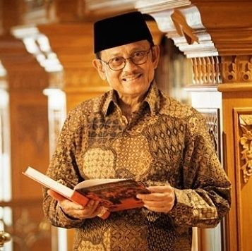

Baharudin Jusuf Habibie


One of the Greatest Indonesian Engineer Ever
- 1936 - Born in Parepare, Indonesia.
- 1954 - Continue his study at ITB (institut Teknologi Bandung), and got scholarship from Ministry of Education and Culture.
- 1955 - take education in germany by specializing in aircraft construction translate at Rhein Westfalen Aachen Technische Hochschule (RWTH).
- 1960 - Habibie holds a Diploma in Engineering with cum laude predicate. Five years later, he holds a doctorate in engineering with summa cum laude predicate. Altogether, there were 10 years he spent his education period in Germany.
- 1973 - Habibie is trusted to be the first leader of the state aircraft industry, which has now changed its name to PT Dirgantara Indonesia.
- 1978 - After being trusted to lead PT Dirgantara Indonesia, Habibie was later appointed as State Minister for Research and Technology. He held the position for two decades.
- 1995 - Habibie successfully launched a test flight of the N250 aircraft on August 10, 1995.
- 1998 - On March 11, 1998, Habibie officially became the 7th Vice President of the Republic of Indonesia replacing Try Sutrisno. however, he only held the position of vice president for awhile. during the 1998 crisis. Habibie finally served as president of the Republic of Indonesia, replacing Soeharto. Under his leadership, Indonesia managed to survive from adversity.
- 2019 - The 3rd President of the Republic of Indonesia, Bacharudin Jusuf Habibie, passed away on Wednesday 11 September 2019 at 18.05 WIB at the Gatot Soebroto Army Hospital.